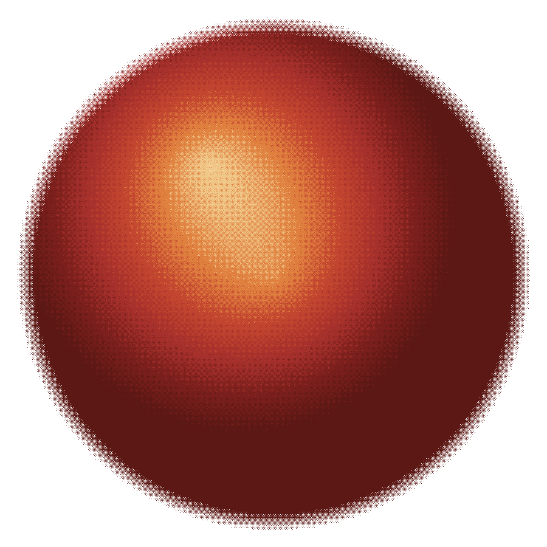
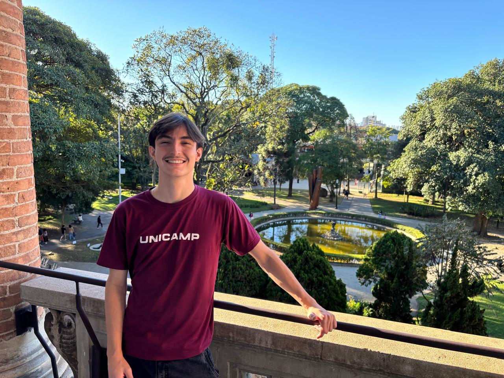

I build machine learning and backend systems that carry real weight — payments, credit decisions, pricing, robotic control. At H.IAAC I research curiosity-driven agents for bimanual manipulation, at the intersection of neuroscience and reinforcement learning.
now — ai engineer II at CloudWalk, working on Pierre: a financial agent that reads a person’s accounts through Open Finance and turns a statement nobody understands into plain transparency about their own money.
now — undergraduate researcher at H.IAAC, on curiosity-driven models for bimanual robotic manipulation, where neuroscience and reinforcement learning meet.

one of the my favorite places in são paulo